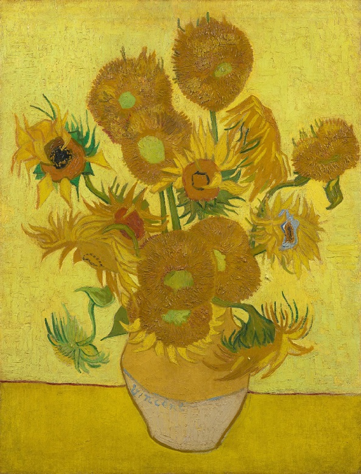

ทานตะวันดอกลำดับที่ 6
ดอกทานตะวันภาพที่ 6 ของแวน โก๊ะ คือภาพที่ขึ้นชื่อว่ามีเฉดสีเหลืองหลากหลายที่สุด มากถึง 38 เฉดสี จนมีคนเรียกกันว่า 50 Shades of Yellow เลยทีเดียว ซึ่งเป็นภาพที่ทำให้เห็นความหลากหลาย และลวดลายของการเล่นสีเหลืองของแวน โก๊ะมากที่สุด ปัจจุบันเป็นทรัพย์สินของมูลนิธิแวน โก๊ะ จัดแสดงอยู่ที่พิพิธภัณฑ์แวน โก๊ะ กรุงอัมสเตอร์ดัม ประเทศเนเธอร์แลนด์